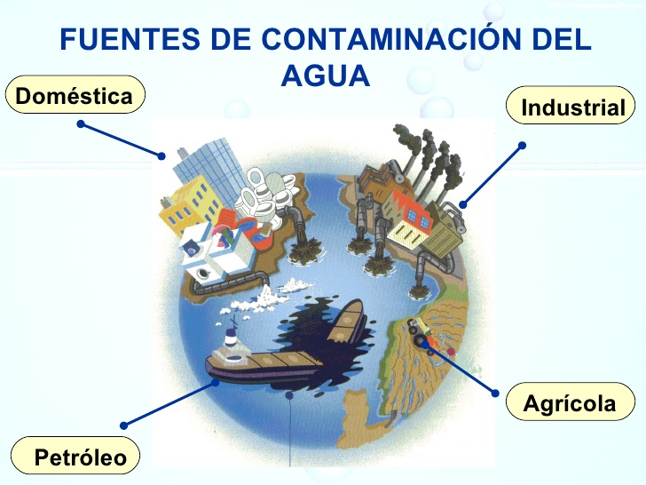
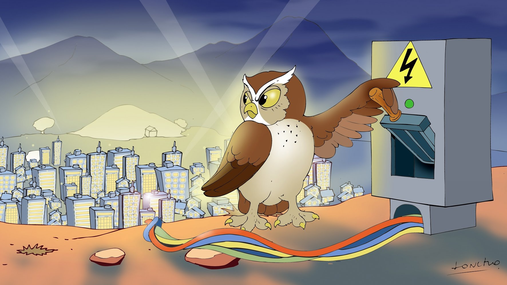
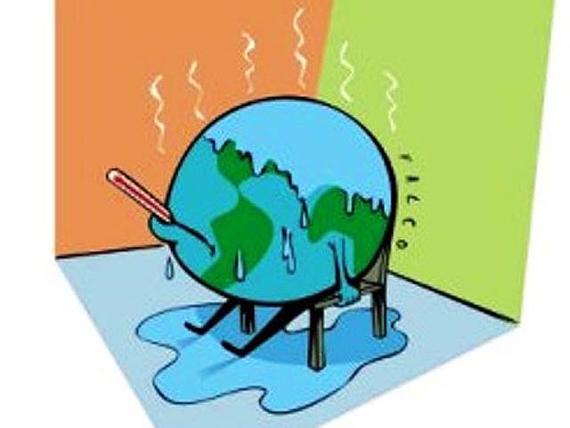
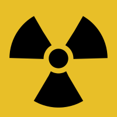
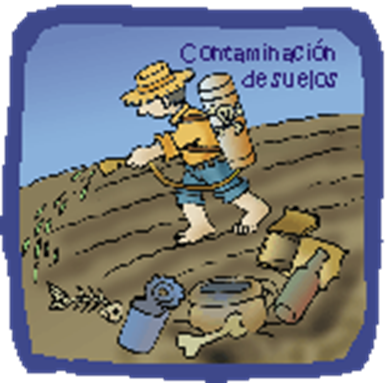
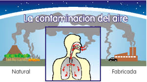

Maria Guadalupe Moreno Cruz 4F
Contaminacion
Matan a nuestro planeta


Matan a nuestro planeta
La contaminación es la introducción de sustancias u otros elementos físicos en un medio que provocan que éste sea inseguro o no apto para su uso.1 El medio puede ser un ecosistema, un medio físico o un ser vivo. El contaminante puede ser una sustancia química, energía (como sonido, calor, luz o radiactividad). Es siempre una alteración negativa del estado natural del medio, y por lo general, se genera como consecuencia de la actividad humana considerándose una forma de impacto ambiental.
Como su nombre lo sugiere, “Contaminación del agua” es el tipo de contaminación que sfren distintos cuerpos de agua. Varias criaturas acuáticas dependen de estos cuerpos de agua y sus características naturales nutritivos para apoyar su vida. Contaminación del Agua
No es muy fácil de definir la definición de la contaminación acústica. Esencialmente, la contaminación acústica es el tipo de contaminación que se produce por diferentes fuentes de audio que está causando la sensación de irritación, distracción para nuestro medio ambiente. Esta contaminación no es no sólo perturbar el medio ambiente sino que también produce daño a nuestra humanidad.

La luz artificial se está convirtiendo en un peligro para nuestra planeta. Esta no sólo afecta a la belleza natural, sino a seres humanos, los animales, las aves y la vegetación. Por lo tanto, el ciclo de vida de los seres vivos también está siendo afectada por la contaminación lumínica.
Es un hecho bien conocido que la quema de combustibles fósiles en centrales eléctricas, hornos industriales y motores de vehículos causa la contaminación del aire. Sin embargo, un menor impacto conocido asociado con estos procesos de generación de energía es la contaminación térmica.
Los desechos radiactivos son residuos que contienen material radiactivo. Los desechos radiactivos son generalmente subproductos de la generación de energía nuclear y otras aplicaciones de la fisión nuclear o tecnología nuclear, como la investigación y la medicina. Los residuos radiactivos son peligrosos para la salud humana y el medio ambiente, y está regulado por las agencias gubernamentales con el fin de proteger la salud humana y el medio ambiente.
La contaminación del suelo se refiere a la contaminación del suelo por medio de exceso de fertilizantes, productos químicos, insecticidas, herbicidas, pesticidas, etc provocan contaminación del suelo en la disminución de la calidad del suelo y es causada por la erosión del suelo.
El monóxido de carbono y óxido de azufre se consideran contaminantes primarios. Estos contaminantes sufren cambios químicos y causan efectos secundarios tales como smog. La contaminación del aire se define por la existencia y la integración de los compuestos tóxicos en el ambiente en concentraciones lo suficientemente altas como para causar daño a los seres humanos, los animales y el medio ambiente de la Tierra.
la contaminación hace que las personas estemos cada vez más expuestas a padecer problemas cardiovasculares, con el grave peligro que esto entraña para nuestra salud y vida.
la capa de ozono es la que nos protege de los rayos del Sol, los cuales pueden llegar a ser mortíferos sin esta capa. la consecuencia de este debilitamiento es que cada vez nos protege menos y, por ende, cada vez tenemos una mayor temperatura en el planeta. Esto no solo hace que cada vez haya más zonas desiertas en las que es imposible vivir, sino que también hace que el hielo en los polos se deshaga y mueran muchas especies por ello. No hace falta mencionar que esto hace subir indudablemente el nivel del mar y que, de seguir así, muchas ciudades costeras se verán arrasadas, quedándose sin playas y sin zona costera.
la contaminación al medio ambiente afecta al agua y al suelo, lo que hace que cada vez haya más especies en peligro de extinción. El agua no es potable en una gran cantidad de sitios y el suelo para la siembre no tiene los nutrientes necesarios, lo que hace que cada vez se pueda cultivar menos y que el número de cosechas para nuestro sustento sea cada vez menor.
seguro que ya te has dado cuenta que los inviernos pueden ser mucho más fríos o que los veranos son mucho más calurosos, a la vez que seguro te has dado cuenta que las estaciones como el invierno y el verano pueden ser más largas y que las de temperaturas medias, son cada vez más cortas. Todos estos cambios y los fenómenos que no se habían visto desde hace mucho tiempo o incluso nunca se habían visto son causados por la contaminación.
se refieren al aumento observado en los últimos siglos de la temperatura del sistema climático de la Tierra y sus efectos. Múltiples líneas de pruebas científicas demuestran que el sistema climático se está calentando. Aunque a menudo la prensa popular comunica el incremento de la temperatura atmosférica superficial como medición del calentamiento global
Reemplazar una bombilla tradicional por una de bajo consumo ahorra más de 45 kilogramos de dióxido de carbono al año. Cierto que la segunda es más cara, pero resulta más económica a lo largo de su vida. Una sola de ellas puede reducir hasta 60 euros los gastos de electricidad, según la Comisión Europea.
Sólo con apagar la televisión, el DVD o el ordenador cuando no estén en uso evitarás que miles de kilos de CO2 salgan a la atmósfera. No dejes los aparatos eléctricos en stand-by (espera): un televisor que permanece encendido durante tres horas al día (la media que los europeos ven la tele) y en stand-by las 21 horas restantes consumirá un 40 por ciento de la energía total en el modo de espera. No dejes el cargador de tu móvil enchufado todo el tiempo, aunque no esté conectado al teléfono, porque seguirá consumiendo electricidad.
Anda, monta en bicicleta, usa el transporte público. Ahorrarás 30 gramos de CO2 por cada 4,5 kilómetros que no conduzcas. Por cada litro de combustible que quema el motor de un coche, se libera una media de 2,5 kilos de CO2, según la Comisión Europea. Bruselas también recomienda no correr con el coche: gastarás menos gasolina y emitirás menos CO2. Ir a más de 120 kilómetros por hora aumenta un 30 por ciento el consumo de combustible, frente a una velocidad de 80 kilómetros por hora.
Si la presión de tus neumáticos baja 0,5 bares, tu coche consumirá un 2,5 por ciento más de combustible y, por tanto, liberará un 2,5 por ciento más de CO2. El ahorro de cuatro litros de gasolina evita la emisión de seis kilos de dióxido de carbono.
Puedes ahorrar más de 730 kilos de CO2 al año al reciclar la mitad de la basura que se produce en casa.
Escoge productos con poco envase: una botela de 1,5 litros genera menos residuos que tres de medio litro. En la compra usa bolsas reutilizables. Evita las toallitas húmedas y de papel. Puedes evitar la emisión de 1.100 kilos de CO2 si reduces tu basura un 10 por ciento.
Es necesaria una gran cantidad de energía para calentar agua. Instala un regulador de caudal del agua en la ducha y evitarás la emisión de más de 100 kilos de dióxido de carbono al año. Lava con agua fría o tibia y ahorrarás 150 kilos de CO2. Ahorras agua caliente y gastas cuatro veces menos energía si en vez de un baño te das una ducha. Cierra el grifo mientras te lavas los dientes. Asegúrate de que tus grifos no gotean: el goteo de uno puede hacer perder en un mes el agua suficiente para llenar una bañera.
Tapar la cazuela mientras cocinas es un modo de ahorrar mucha energía. Aún mejor son las ollas a presión y las vaporeras, que ahorran un 70 por ciento de energía. Usa la lavadora y el lavavajillas sólo cuando estén llenos. Si no lo están, usa programas económicos. No hace falta poner una temperatura alta, hoy los detergentes son eficaces incluso cuando es baja. Recuerda que si el frigorífico y el congelador están cerca de los fuegos o de la caldera, consumirán mucha más energía. Si éstos son viejos, descongélalos periódicamente. Los nuevos tienen ciclos automáticos de descongelación y son casi dos veces más eficientes. No pongas en la nevera alimentos calientes o templados; ahorrarás energía si dejas que se enfríen primero.
La oscilación de dos grados centígrados en invierno y en verano ahorra más de 600 kilos de dióxido de carbono por hogar en un solo año. Bajar la temperatura un grado puede reducir la factura de la calefacción entre un 5 y un 10 por ciento. Cuando ventiles tu casa, abre las ventanas unos minutos, no dejes escapar el calor mucho tiempo. Si dejas una pequeña abertura todo el día, la energía necesaria para mantener el interior caliente durante seis meses de frío será de casi una tonelada de emisiones de CO2. Aísla bien tu casa. No abuses de los aparatos de aire acondicionado, consumen mucha energía y emiten unos 650 gramos de CO2. Y supone un coste en tu factura de 10 céntimos de euro por hora.
Un solo árbol absorbe una tonelada de dióxido de carbono durante toda su vida.